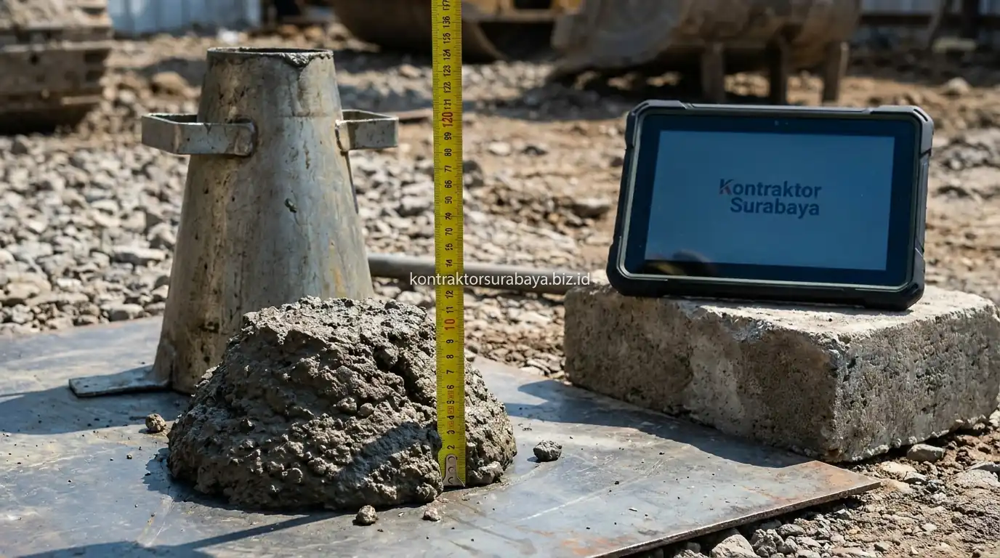

Membangun rumah dari nol di kawasan perkotaan seperti Surabaya, Sidoarjo, dan Gresik menuntut perhatian ekstra pada aspek struktur bawah tanah dan kerangka beton bertulang. Kondisi karakteristik tanah lempung ekspansif di sebagian wilayah Surabaya Timur dan Barat sering kali menjadi penyebab utama dinding rumah mengalami retak rambut hingga retak struktur miring hanya dalam kurun waktu 1–2 tahun pasca-serah terima kunci.
Kekhawatiran terhadap kualitas beton rapuh dan struktur yang mudah retak sering muncul karena pemilik rumah tidak memiliki sarana teknis untuk memverifikasi metode kerja pemborong. Oleh karena itu, jasa bangun rumah profesional seperti Kontraktor Surabaya menerapkan Standard Operating Procedure (SOP) material terstandarisasi untuk memberikan jaminan keamanan struktural anti-retak bagi setiap klien.
1. Verifikasi Mutu Beton Sebelum dan Selama Proses Pengecoran
Verifikasi mutu beton dilakukan melalui pengujian slump dan pengambilan sampel silinder/kubus untuk uji kuat tekan laboratorium. Langkah ini memastikan campuran beton ready-mix maupun site-mix yang digunakan sesuai spesifikasi struktural K-250 atau K-300 yang telah diperhitungkan oleh tim structural engineer.
Verifikasi ini menjadi bagian integral dari SOP material yang dijalankan secara konsisten. Sampel beton yang diambil selama proses pengecoran diuji kekuatannya pada umur 7, 14, hingga 28 hari di laboratorium independen terakreditasi, memberikan bukti data objektif mengenai kualitas struktur yang telah terbangun sebagai bagian dari dokumentasi garansi kualitas bagi klien.
2. Pengujian Slump sebagai Kontrol Konsistensi Campuran
Pengujian slump dilakukan di lokasi proyek (on-site) tepat sebelum truk mixer menuangkan beton ke dalam bekisting pondasi atau plat lantai. Uji ini menggunakan kerucut Abrams untuk mengukur tingkat kekentalan (workability) adonan beton segar.
Mencegah Campuran Terlalu Encer
Penambahan air berlebih oleh tukang nakal akan mempermudah penuangan tetapi menurunkan kuat tekan beton secara drastis dan memicu retak susut pori-pori.
Keseragaman Mutu Seluruh Titik
Uji slump memastikan keseragaman mutu antar-batch truk molen, sehingga tidak ada titik balok atau kolom yang memiliki kekuatan lebih rendah dibanding bagian lainnya.

3. Standar Kualitas Besi Tulangan Sesuai Spesifikasi Struktur (SNI)
Besi tulangan yang digunakan diverifikasi kesesuaiannya dengan spesifikasi gambar kerja, mencakup diameter nominal, mutu baja (BjTP polos atau BjTS ulir), serta sertifikasi SNI penuh (bukan besi banci). Standar material ini menjadi benteng utama dalam menahan gaya tarik dan momen lentur pada bangunan 1–2 lantai.
Pemasangan besi tulangan mengikuti jarak begel/sengkang dan pola kait gempa (135 derajat) yang telah dihitung sesuai beban gempa zona Jawa Timur, memastikan penyaluran beban yang merata dari atap, lantai 2, balok sloof, hingga diteruskan ke pondasi tapak (footplat) dan strauss pile.
4. Pemeriksaan Posisi dan Selimut Beton Sebelum Pengecoran
Kebutuhan kepastian posisi tulangan dijawab melalui tahapan inspeksi checklist pre-concreting sebelum beton dituangkan. Tim pengawas lapangan memeriksa beberapa elemen kritis:
- Jarak antar-tulangan utama dan sengkang: Memastikan tidak ada pergeseran jarak besi yang dapat mengurangi kapasitas geser balok.
- Pemasangan beton decking (tahu beton): Menjaga ketebalan selimut beton (concrete cover) minimal 2–3 cm agar besi tulangan terlindung dari kelembapan tanah dan tidak berkarat (korosi).
- Kebersihan bekisting: Membersihkan serpihan kayu, debu, atau kawat bendrat di dasar cetakan sebelum pengecoran agar beton menyatu sempurna tanpa rongga kotoran.
5. Proses Curing Beton yang Tepat untuk Mencegah Retak Struktural
Proses curing atau perawatan beton pasca-pengecoran dilakukan sesuai durasi teknis minimal 7 hingga 14 hari. Tahap ini sering kali diabaikan oleh pemborong konvensional demi mempercepat waktu pengerjaan, padahal pengeringan beton yang terlalu cepat akibat paparan terik matahari akan memicu retak susut plastis (plastic shrinkage cracking).
Metode curing mencakup pembasahan berkala, penyiraman air secara kontinu, atau penutupan permukaan plat dak dengan karung goni basah / terpal plastik untuk menjaga kelembapan selama proses hidrasi kimiawi semen berlangsung optimal.
6. Penyesuaian Metode Konstruksi dengan Karakteristik Cuaca Surabaya
Iklim panas tropis dengan suhu siang hari mencapai 33–35°C di Surabaya membutuhkan pendekatan khusus saat konstruksi fisik berjalan:
- Pengecoran di waktu teduh: Melakukan pengecoran plat lantai bentang luas pada sore hari atau malam hari untuk menghindari dehidrasi cepat pada campuran beton segar.
- Penggunaan admixture retarder (bila diperlukan): Mengendalikan waktu ikat beton ready-mix selama perjalanan truk mixer di tengah kemacetan jalan raya Surabaya.
- Pondasi dalam untuk tanah ekspansif: Mengombinasikan pondasi tapak dengan bored pile/strauss pile berkedalaman 4–8 meter untuk menembus lapisan tanah keras (hard soil).
"Keindahan arsitektur fasad dan interior mewah sebuah rumah hanya akan bertahan jika ditopang oleh pondasi yang kuat dan disiplin SOP material tanpa kompromi pada mutu beton."
Wujudkan pembangunan hunian impian Anda dari nol dengan kepastian mutu material bersertifikasi, pengawasan berkala, dan garansi struktur tertulis. Pelajari rincian layanan kami pada halaman kontraktor rumah tinggal Surabaya, konsultasikan estimasi anggaran pada halaman RAB & estimasi biaya, atau lihat dokumentasi pelaksanaan kami pada galeri proyek kami.